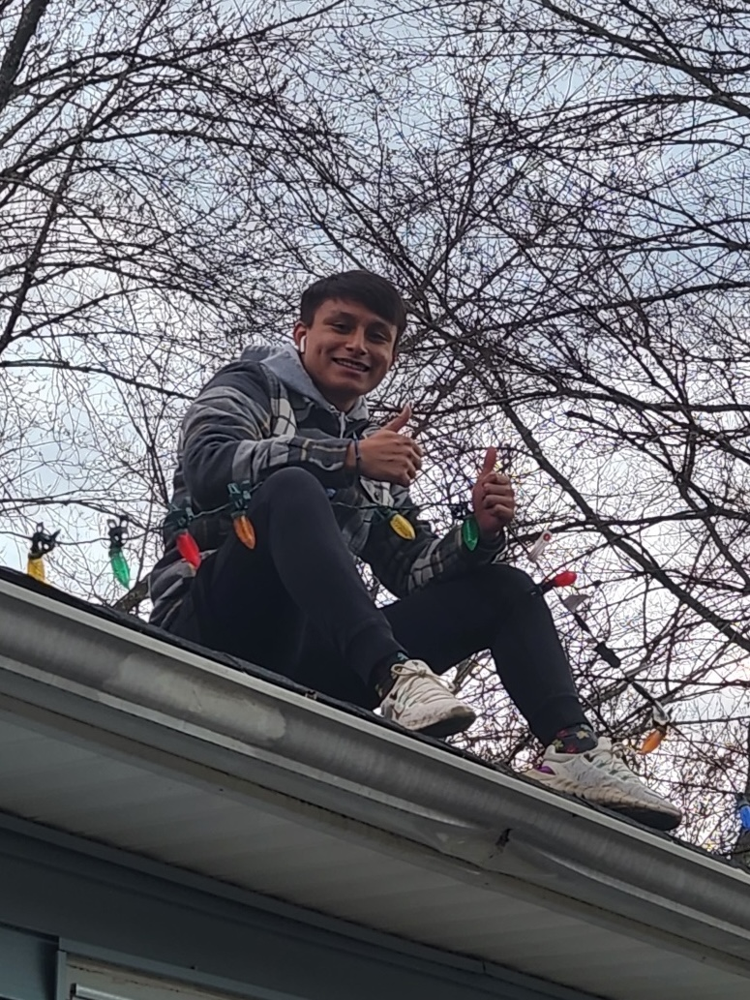

I'm Alan Soto and this is my website!

I was born and raised in Hudson Valley, New York, and am currently finishing up my bachelor's in Computer Science at the University at Buffalo.
It was not until my last couple of years in high school that I realized Computer Science was everything that I was looking for in a career.
It dealt with different challenges and rewarded you when solving them. Also, having the capability to make projects like this website is pretty cool.
Besides that stuff, I have other interests that have made me who I am.
Video games have been one of my favorite pastimes with me playing many over the years. I've loved games ranging from way back like Galaga and Tetris to current-day games like Red Dead and Cyberpunk.
Nowadays, sports have become a big part of my life whether it's been taking part in them or just watching them (Let's go Mets and Knicks!).
Running has been the major sport I've taken part in and while I may not be as consitent as I used to be, I still put time aside to go out for a few runs.
Besides health, the sport helped me grow in leadership and communication skills that have carried a long way since then. I really do owe a lot to the years I dedicated to it.
Well that was a quick run down of me, hopefully it gave you a good idea of me!